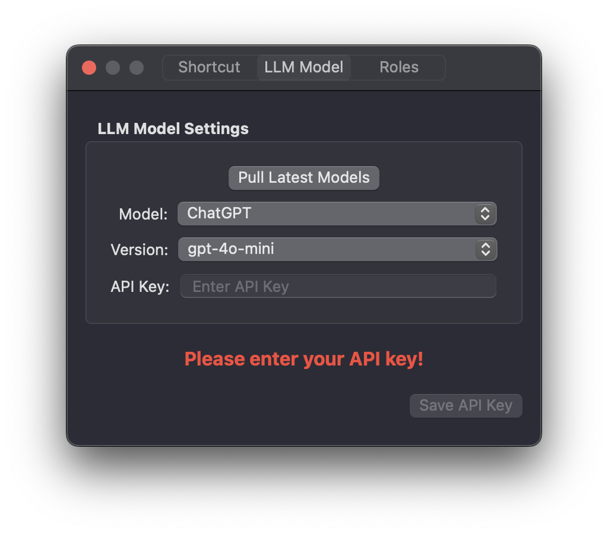

切换到中文
Switch to English
How to Configure Your LLM Models
1. Access Settings
Open Wright app - a welcome page will appear on first launch
Click "API Key Settings" on the welcome page, or
Alternatively: Click the app menu → Settings
2. Configure API Key
In the Settings window, go to "LLM Model" tab
Select your desired LLM provider
Paste your API key in the corresponding field
Click Save to securely store your key
3. Model Selection
After saving your API key, you can select your preferred model version
The model will be ready to use immediately

Wright LLM Model Settings Interface
How to Get Your LLM API Key
OpenAI (ChatGPT) API Key
1. Account Setup
Visit
OpenAI Platform
Sign up for a new account or log in to existing account
2. Generate API Key
Navigate to "API keys" section
Click "Create new secret key"
Give your key a name (optional)
Copy the key immediately (it won't be shown again)
Groq API Key
1. Account Setup
Visit
Groq Console
Sign up for a new account or log in to existing account
2. Generate API Key
Navigate to "API Keys" section
Click "Create API Key"
Name your key (recommended)
Copy the key immediately (it won't be shown again)
Grok API Key
1. Account Setup
Visit Grok
PromptIDE
Sign in using your X (Twitter) account
2. Generate API Key
Click your username in the top right corner
Select "API Keys" from the dropdown
Click "Create API Key"
Set permissions (e.g., chat:write for Grok access)
Copy the key immediately (it won't be shown again)
DeepSeek API Key
1. Account Setup
Visit
DeepSeek Platform
Sign up for a new account or log in to existing account
2. Generate API Key
Navigate to "API Keys" section in the dashboard
Click "Create new API key"
Name your key (optional)
Copy the key immediately (it won't be shown again)
Google Gemini API Key
1. Account Setup
Visit
Google AI Studio
Sign in with your Google account or create one
2. Generate API Key
Click "Get API key" in the left navigation panel
Click "Create API key"
Choose to create in a new or existing Google Cloud project
Follow the prompts if creating a new project
Copy the key immediately (it won't be shown again)
Important Security Notes
Never share your API keys or expose them in public repositories
Store API keys securely (e.g., use environment variables)
Rotate keys periodically for better security
Monitor API usage to avoid unexpected charges
如何设置LLM模型
1. 访问设置
打开Wright应用 - 首次启动时会显示欢迎页面
点击欢迎页面上的"API密钥设置"，或
或者：点击应用菜单 → 设置
2. 配置API密钥
在设置窗口中，转到"LLM模型"标签
选择您想要使用的LLM提供商
在相应字段中粘贴您的API密钥
点击保存以安全存储您的密钥
3. 模型选择
保存API密钥后，您可以选择首选的模型版本
模型将立即可以使用
Wright LLM模型设置界面
如何获取你的LLM API密钥
OpenAI (ChatGPT) API密钥
1. 账户设置
访问
OpenAI平台
注册新账户或登录现有账户
2. 生成API密钥
导航至"API keys"部分
点击"Create new secret key"
为密钥命名（可选）
立即复制密钥（之后将不会再显示）
Groq API密钥
1. 账户设置
访问
Groq控制台
注册新账户或登录现有账户
2. 生成API密钥
导航至"API Keys"部分
点击"Create API Key"
为密钥命名（推荐）
立即复制密钥（之后将不会再显示）
Grok API密钥
1. 账户设置
访问
PromptIDE
使用您的X（Twitter）账户登录
2. 生成API密钥
点击右上角的用户名
从下拉菜单中选择"API Keys"
点击"Create API Key"
设置权限（例如，chat:write用于Grok访问）
立即复制密钥（之后将不会再显示）
DeepSeek API密钥
1. 账户设置
访问
DeepSeek平台
注册新账户或登录现有账户
2. 生成API密钥
导航至仪表板中的"API Keys"部分
点击"Create new API key"
为密钥命名（可选）
立即复制密钥（之后将不会再显示）
Google Gemini API密钥
1. 账户设置
访问
Google AI Studio
使用您的Google账户或创建一个
2. 生成API密钥
点击左侧导航面板中的"Get API key"
点击"Create API key"
选择在新的或现有的Google Cloud项目中创建
如果创建新项目，请按照提示操作
立即复制密钥（之后将不会再显示）
重要安全注意事项
永远不要分享您的API密钥或将其暴露在公共存储库中
安全地存储API密钥（例如，使用环境变量）
定期轮换密钥以提高安全性
监控API使用情况以避免意外费用